WordPress Development
Building and maintaining WordPress websites using Divi, Elementor, WooCommerce, plugins, forms, and custom page layouts.
WordPress Developer & Web Designer
I’m a WordPress Developer with 2+ years of experience designing, developing, and maintaining responsive websites using WordPress, Divi and Elementor.
About Me
I’m a WordPress Developer and Web Designer with experience in website design, WordPress development, content management, troubleshooting, and client support.
I design, develop, and maintain responsive WordPress websites for businesses across different industries using WordPress, Divi and Elementor.
I collaborate with project managers, follow business objectives, resolve website issues, and make sure websites meet modern design, accessibility, and usability standards.
Skills
Building and maintaining WordPress websites using Divi, Elementor, WooCommerce, plugins, forms, and custom page layouts.
Creating mobile-friendly layouts with clean spacing, readable sections, modern design, and strong user experience.
Using HTML, CSS, and JavaScript to customize sections, improve layouts, add interactions, and fix responsive design issues.
Handling content updates, troubleshooting website issues, improving usability, supporting clients, and maintaining website performance.
Tools I Use
Previous Work
Website Developer
I designed, developed, and maintained responsive WordPress websites for businesses across multiple industries. My work focused on creating clean, modern, user-friendly websites while supporting content updates, troubleshooting, maintenance, and client website improvements.
Selected WordPress Projects
A selection of WordPress websites and landing pages I designed, customized, or maintained using WordPress, Divi, Elementor, responsive CSS, and front-end adjustments. These projects highlight my experience with service businesses, law firms, automotive, education, media, and landing page builds.
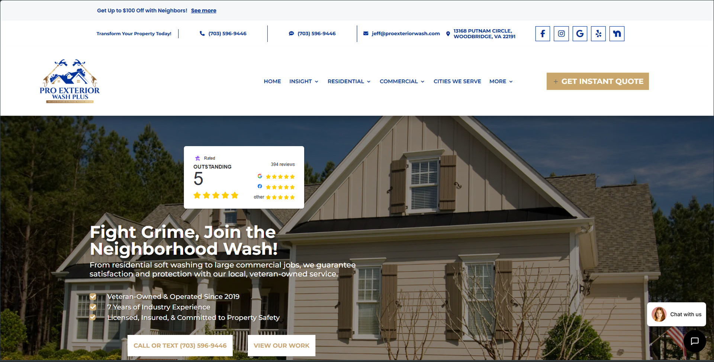
Service Website
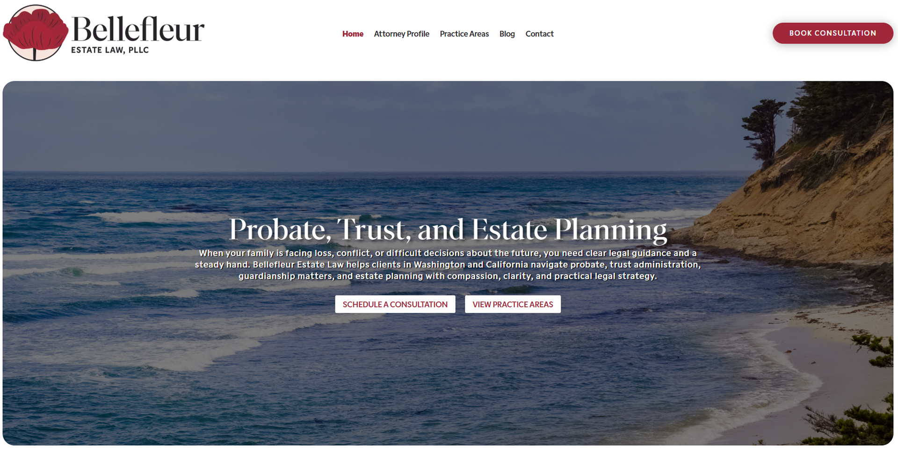
Law Firm Website
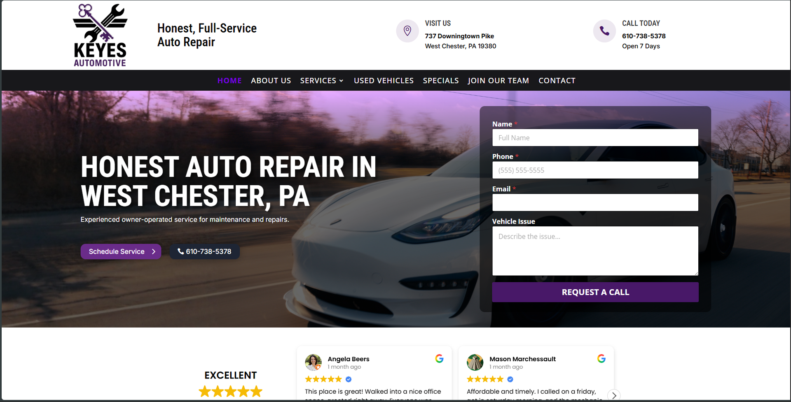
Automotive Website
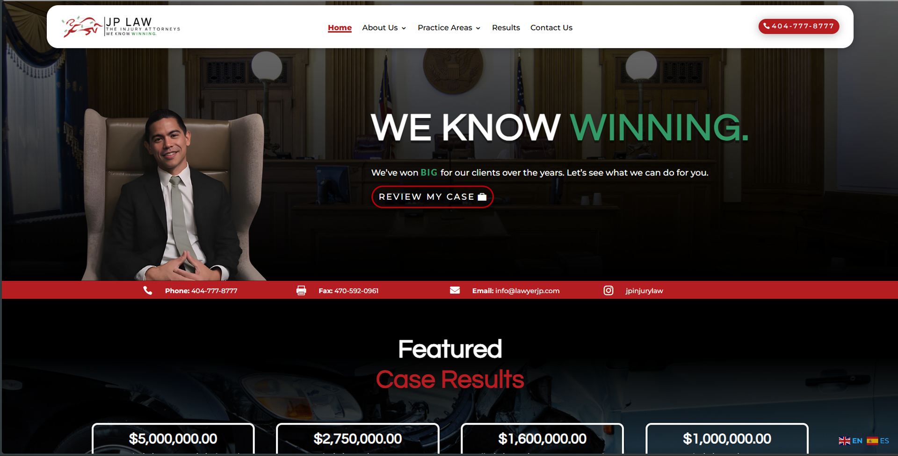
Law Firm Website
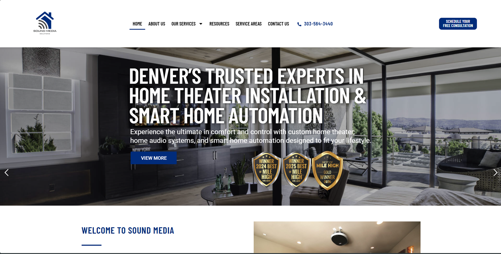
Service Website
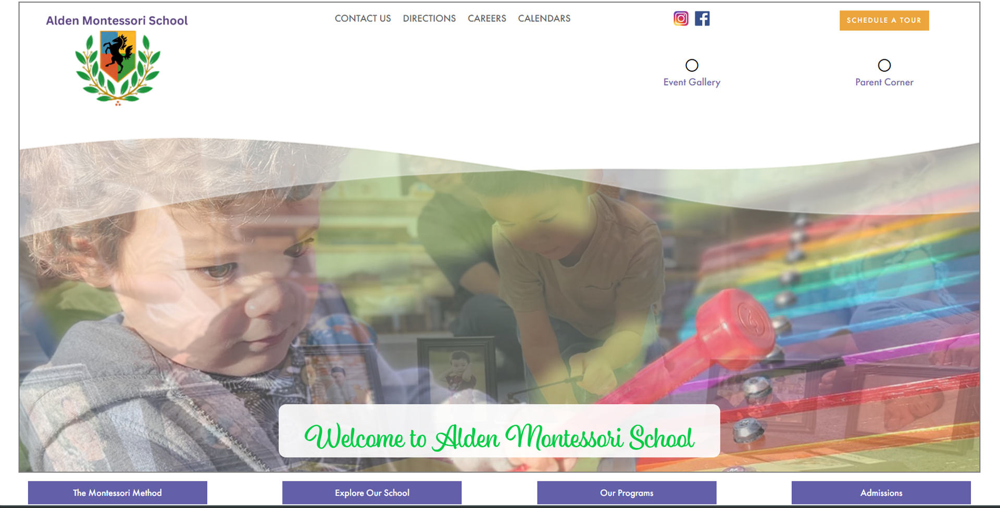
Education Website
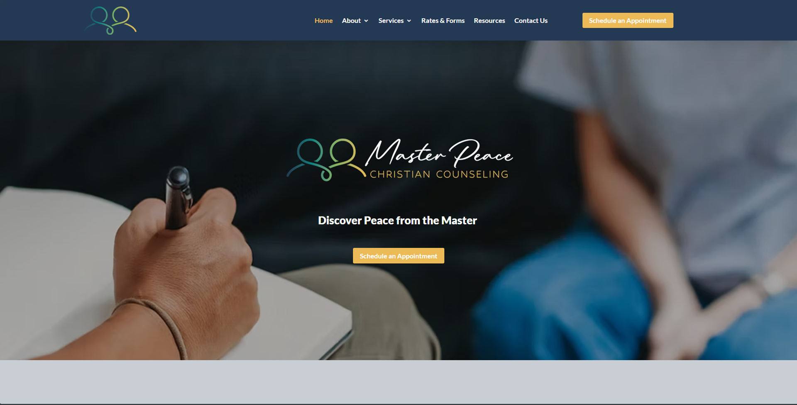
Counseling Service Website
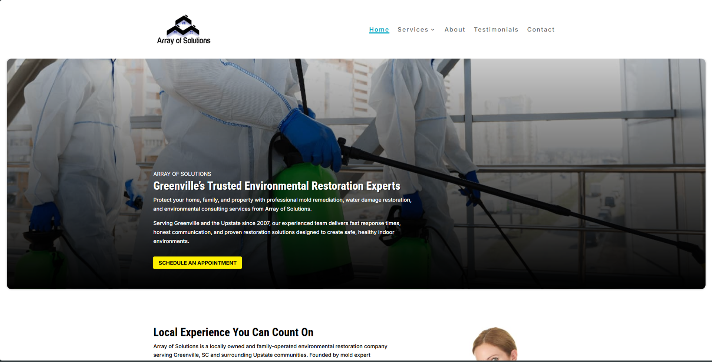
Service Website
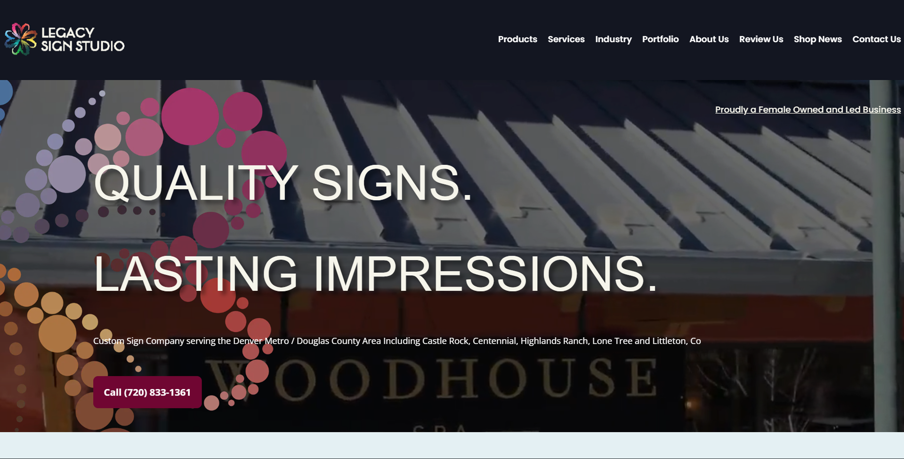
Business Website
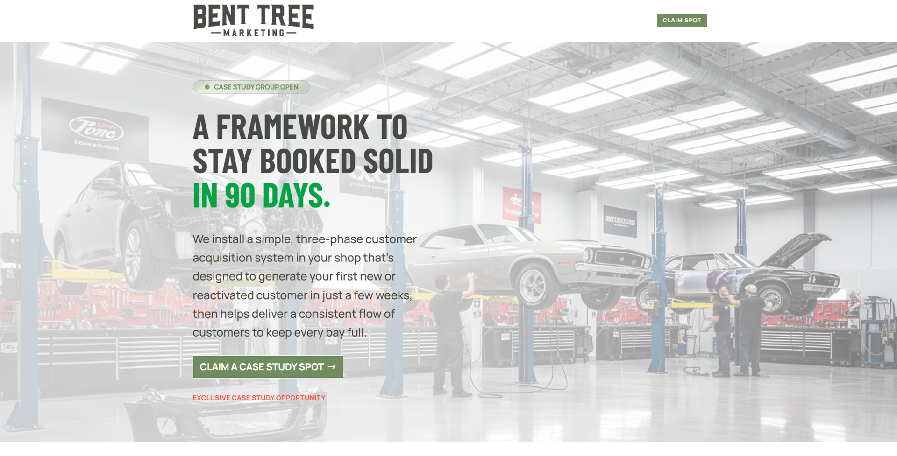
Landing Page
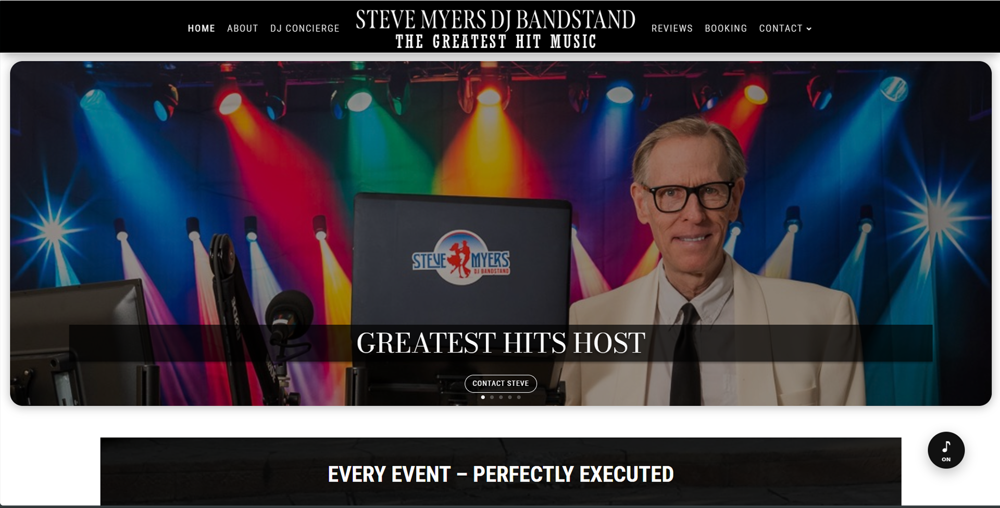
Service Website
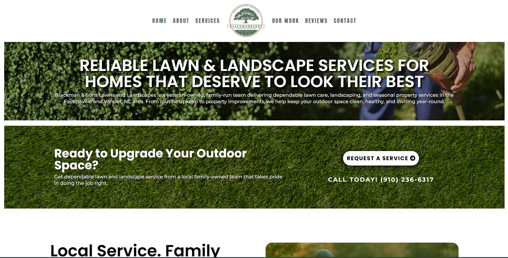
Business / Service Website
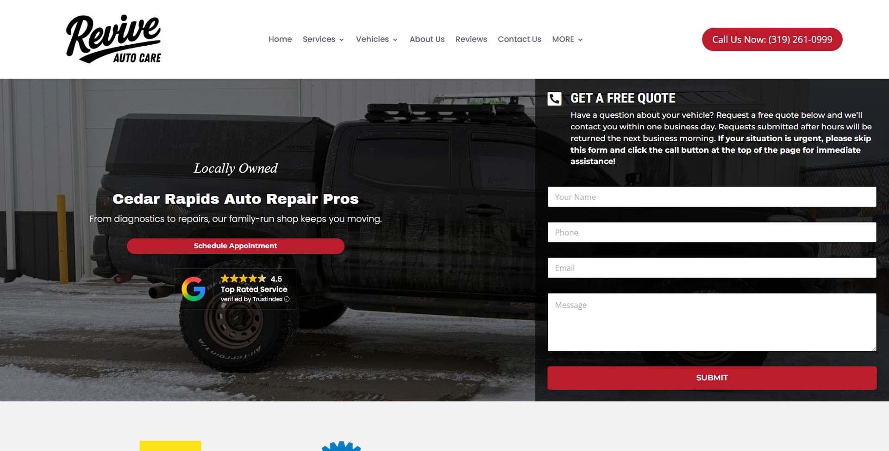
Automotive Website
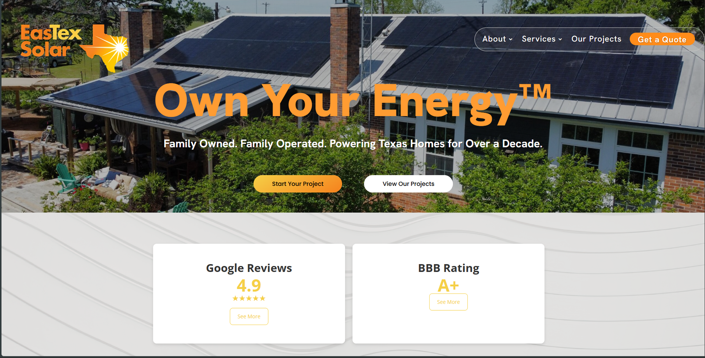
Service Website
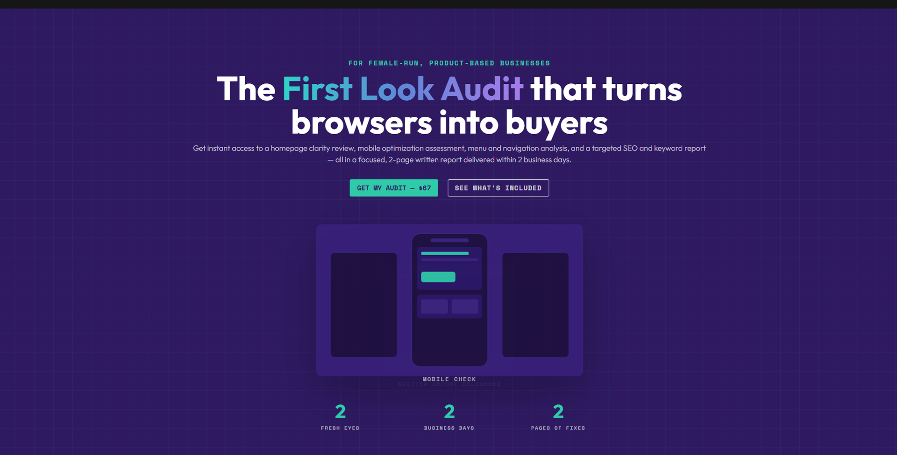
Landing Page
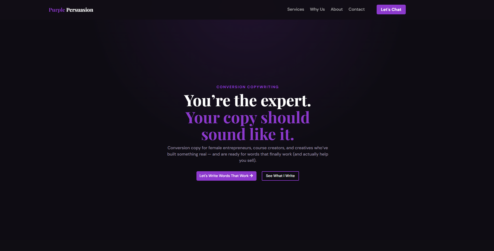
Landing Page
Available for Opportunities
I’m open to job opportunities where I can design, build, maintain, and improve responsive WordPress websites.
Email Me